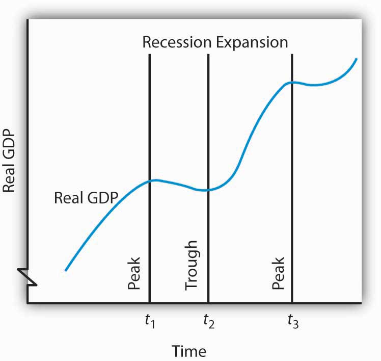
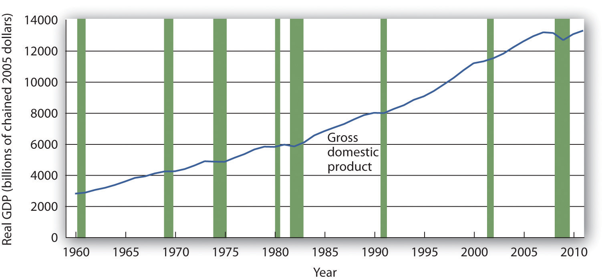
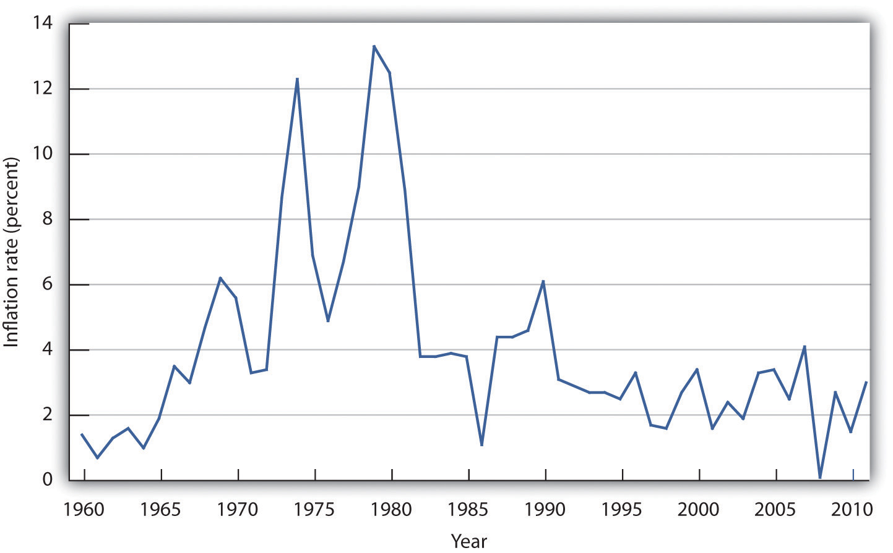
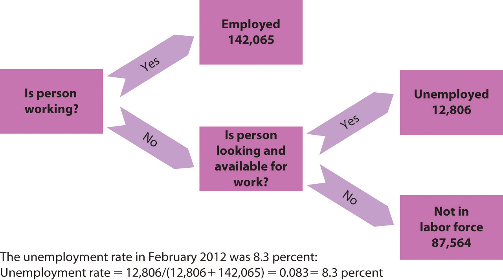
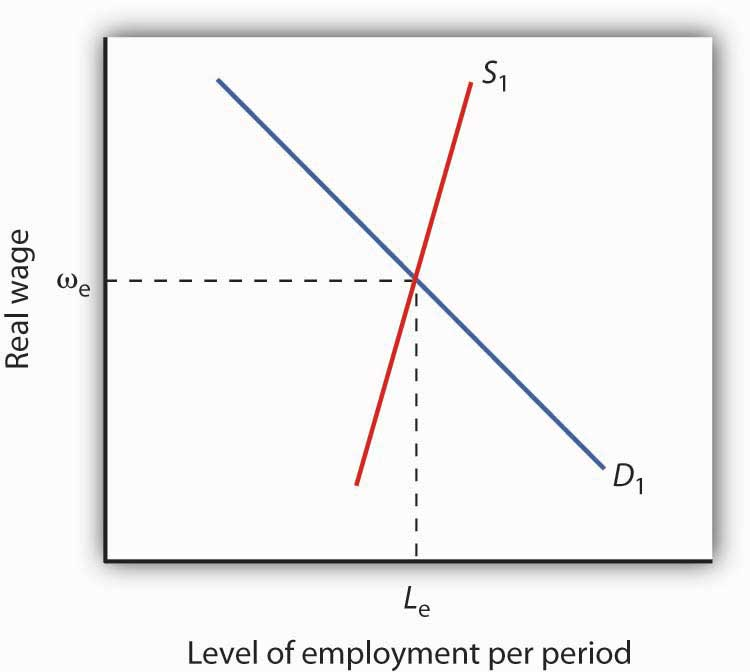
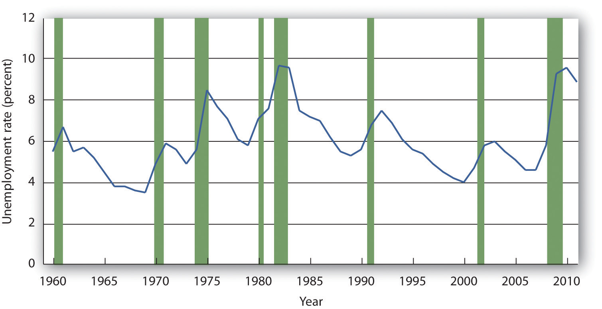

The U.S. economy seemed to be doing well overall after the recession of 2001. Growth had been normal, unemployment had stayed low, and inflation seemed to be under control. The economy began to unravel at the end of 2007—total output fell in the fourth quarter and again in the first quarter of 2008. It recovered—barely—in the second quarter. Then things went sour…very sour. The economies of the United States and those of much of the world were rocked by the worst financial crisis in nearly 80 years.
A good deal of the U.S. economy’s momentum when things were going well had been fueled by rising house prices. Between 1995 and 2007, housing prices in the United States more than doubled. As house prices rose, consumers who owned houses felt wealthier and increased their consumption purchases. That helped fuel economic growth. The boom in housing prices had been encouraged by policies of the nation’s monetary authority, the Federal Reserve, which had shifted to an expansionary monetary policy that held short-term interest rates below the inflation rate. Another development, subprime mortgages—mortgage loans to buyers whose credit or income would not ordinarily qualify for mortgage loans—helped bring on the ultimate collapse. When they were first developed, subprime mortgage loans seemed a hugely profitable investment for banks and a good deal for home buyers. Financial institutions developed a wide range of instruments based on “mortgage-backed securities.” As long as house prices kept rising, the system worked and was profitable for virtually all players in the mortgage market. Many firms undertook investments in mortgage-backed securities that assumed house prices would keep rising. Large investment banks bet heavily that house prices would continue rising. Powerful members of Congress pressured two government-sponsored enterprises, Fannie Mae (the Federal National Mortgage Association) and Freddie Mac (the Federal Home Loan Mortgage Corporation), to be even more aggressive in encouraging banks to make mortgage loans to low-income families. The pressure came from the executive branch of government as well—under both Democratic and Republican administrations. In 1996, the Department of Housing and Urban Development (under Bill Clinton, a Democrat) required that 12% of mortgages purchased by Fannie Mae and Freddie Mac be for households with incomes less than 60% of the median income in their region. That target was increased to 20% in 2000, 22% in 2005 (then under George W. Bush, a Republican), and was to have increased to 28% in 2008.Russell Roberts, “How Government Stoked the Mania,” Wall Street Journal, October 3, 2008, p. A21. But that final target would not be reached, as both Fannie Mae and Freddie Mac were seized by the government in 2008. To top things off, a loosening in bank and investment bank regulations gave financial institutions greater leeway in going overboard with purchases of mortgage-backed securities. As house prices began falling in 2007, a system based on the assumption they would continue rising began to unravel very fast. The investment bank Bear Stearns and insurance company American International Group (AIG) required massive infusions of federal money to keep them afloat. In September of 2008, firm after firm with assets tied to mortgage-backed securities began to fail. In some cases, the government rescued them; in other cases, such as Lehman Brothers, they were allowed to fail.
The financial crisis had dramatic and immediate effects on the economy. The economy’s total output fell at an annual rate of 3.7% in the third quarter of 2008 and 8.9% in the fourth quarter of 2008. Consumers, having weathered higher gasoline prices and higher food prices for most of the year, reduced their consumption expenditures as the value of their houses and the stocks they held plunged—consumption fell at an annual rate of 3.8% in the third quarter and 5.1% in the fourth quarter. As cold fear gripped financial markets and expectations of further slowdown ensued, firms cut down on investment spending, which includes spending on plant and equipment used in production. While this nonresidential investment component of output fell at an annual rate of 0.8%, the residential component fell even faster as housing investment sank at an annual rate of 23.9%. Government purchases and net exports rose, but not enough to offset reductions in consumption and private investment. As output shrank, unemployment rose sharply. Through the first nine months of 2008 there was concern that price levels in the United States and in most of the world economies were rising rapidly, but toward the end of the year the concern shifted to whether or not the price level might fall.
This recession, which officially began in December 2007 and ended in June 2009, was brutal: At 18 months in length, it was the longest U.S. recession since World War II. The nation’s output fell by more than 5%. The unemployment rate rose dramatically, hitting 10% in October 2009 and remaining above 9% throughout 2010. To many people in 2010 and 2011, it certainly did not feel as if the “Great Recession,” as many had begun to refer to it, had really ended. The unemployment rate had come down some but still remained elevated. Housing prices still seemed to be falling or, at best, crawling along a floor. There was, though, a little good news at the end of 2011: real GDP had increased at an annual rate of 3.0% in the fourth quarter, the largest quarterly increase that year. For the entire year, however, real GDP had risen by just 1.7%.
Even the relatively good news in the fourth quarter came with a sour note: most of the increase in GDP had come as firms had increased their inventories, and economists warned that growth was likely to slow in 2012 as firms began cutting back on those expanded inventories. Sure enough, real GDP increased at an annual rate of just 1.9% in the first quarter of 2012, according to the Commerce Department.
An important question, of course, is why the recovery has been so slow. Since the recovery began in June 2009, this has been the slowest recovery since World War II. Several factors have contributed to the slow pace of expansion.
First, the financial crisis that developed in 2008, as mentioned, was particularly severe. Financial crises shake confidence and limit investment. Uncertainty was also created by increased government regulation of economic activity and by the possibility of increased taxes.
Furthermore, the impact of massive government debts—propelled by government deficits going into the recession, the fall in revenue due to the recession, and massive government stimulus programs in response to the recession—added to a general uncertainty about what future policies might be required. Domestic political battles may have contributed to this uncertainty as well. External factors, such as economic crises in Europe and the rising price of oil, also threatened the economy.
Output, employment, and the price level are the key variables in the study of macroeconomics, which is the analysis of aggregate values of economic variables. What determines a country’s output, and why does output in some economies expand while in others it contracts? Why do some economies grow faster than others? What causes prices throughout an economy to fluctuate, and how do such fluctuations affect people? What causes employment and unemployment? Why does a country’s unemployment rate fluctuate? Why do different countries have different unemployment rates?
We would pronounce an economy “healthy” if its annual output of goods and services were growing at a rate it can sustain, its price level stable, and its unemployment rate low. What would constitute “good” numbers for each of these variables depends on time and place, but those are the outcomes that most people would agree are desirable for the aggregate economy. When the economy deviates from what is considered good performance, there are often calls for the government to “do something” to improve performance. How government policies affect economic performance is a major topic of macroeconomics. When the financial and economic crises struck throughout the world in 2008, there was massive intervention from world central banks and from governments throughout the world in an effort to stimulate their economies.
This chapter provides a preliminary sketch of the most important macroeconomic issues: growth of total output and the business cycle, changes in the price level, and unemployment. Grappling with these issues will be important to you not only in your exploration of macroeconomics but throughout your life.
To determine whether the economy of a nation is growing or shrinking in size, economists use a measure of total output called real GDP. Real GDPThe total value of all final goods and services produced during a particular year or period, adjusted to eliminate the effects of changes in prices., short for real gross domestic product, is the total value of all final goods and services produced during a particular year or period, adjusted to eliminate the effects of changes in prices. Let us break that definition up into parts.
Notice that only “final” goods and services are included in GDP. Many goods and services are purchased for use as inputs in producing something else. For example, a pizza parlor buys flour to make pizzas. If we counted the value of the flour and the value of the pizza, we would end up counting the flour twice and thus overstating the value of total production. Including only final goods avoids double-counting. If the flour is produced during a particular period but has not been sold, then it is a “final good” for that period and is counted.
We want to determine whether the economy’s output is growing or shrinking. If each final good or service produced, from hammers to haircuts, were valued at its current market price, and then we were to add the values of all such items produced, we would not know if the total had changed because output changed or because prices changed or both. The market value of all final goods and services produced can rise even if total output falls. To isolate the behavior of total output only, we must hold prices constant at some level. For example, if we measure the value of basketball output over time using a fixed price for valuing the basketballs, then only an increase in the number of basketballs produced could increase the value of the contribution made by basketballs to total output. By making such an adjustment for basketballs and all other goods and services, we obtain a value for real GDP. In contrast, nominal GDPThe total value of final goods and services for a particular period valued in terms of prices for that period., usually just referred to as gross domestic product (GDP), is the total value of final goods and services for a particular period valued in terms of prices for that period. For example, real GDP fell in the third quarter of 2008. But, because the price level in the United States was rising, nominal GDP rose 3.6%.
We will save a detailed discussion of the computation of GDP for another chapter. In this section, our goal is to use the concept of real GDP to look at the business cycleThe economy’s pattern of expansion, then contraction, then expansion again.—the economy’s pattern of expansion, then contraction, then expansion again—and at growth of real GDP.
Figure 20.1 "Phases of the Business Cycle" shows a stylized picture of a typical business cycle. It shows that economies go through periods of increasing and decreasing real GDP, but that over time they generally move in the direction of increasing levels of real GDP. A sustained period in which real GDP is rising is an expansionA sustained period in which real GDP is rising.; a sustained period in which real GDP is falling is a recessionA sustained period in which real GDP is falling.. Typically, an economy is said to be in a recession when real GDP drops for two consecutive quarters, but in the United States, the responsibility of defining precisely when the economy is in recession is left to the Business Cycle Dating Committee of the National Bureau of Economic Research (NBER). The committee defines a recession as a “significant decline in economic activity spread across the economy, lasting more than a few months, normally visible in real GDP, real income, employment, industrial production, and wholesale-retail sales.”“The NBER’s Recession Dating Procedure,” National Bureau of Economic Research, January 7, 2008.
Figure 20.1 Phases of the Business Cycle
The business cycle is a series of expansions and contractions in real GDP. The cycle begins at a peak and continues through a recession, a trough, and an expansion. A new cycle begins at the next peak. Here, the first peak occurs at time t1, the trough at time t2, and the next peak at time t3. Notice that there is a tendency for real GDP to rise over time.
At time t1 in Figure 20.1 "Phases of the Business Cycle", an expansion ends and real GDP turns downward. The point at which an expansion ends and a recession begins is called the peakThe point of the business cycle at which an expansion ends and a recession begins. of the business cycle. Real GDP then falls during a period of recession. Eventually it starts upward again (at time t2). The point at which a recession ends and an expansion begins is called the troughThe point of the business cycle at which a recession ends and an expansion begins. of the business cycle. The expansion continues until another peak is reached at time t3.Some economists prefer to break the expansion phase into two parts. The recovery phase is said to be the period between the previous trough and the time when the economy achieves its previous peak level of real GDP. The “expansion” phase is from that point until the following peak. A complete business cycle is defined by the passage from one peak to the next.
Because the Business Cycle Dating Committee dates peaks and troughs by specific months, and because real GDP is estimated only on a quarterly basis by the Bureau of Economic Analysis, the committee relies on a variety of other indicators that are published monthly, including real personal income, employment, industrial production, and real wholesale and retail sales. The committee typically determines that a recession has happened long after it has actually begun and sometimes ended! In large part, that avoids problems when data released about the economy are revised, and the committee avoids having to reverse itself on its determination of when a recession begins or ends, something it has never done. In December 2008, the committee announced that a recession in the United States had begun in December 2007. In September 2010, the committee announced that this recession had ended in June 2009.
Figure 20.2 "Expansions and Recessions, 1960–2011" shows movements in real GDP in the United States from 1960 to 2011. Over those years, the economy experienced eight recessions, shown by the shaded areas in the chart. Although periods of expansion have been more prolonged than periods of recession, we see the cycle of economic activity that characterizes economic life.
Figure 20.2 Expansions and Recessions, 1960–2011
The chart shows movements in real GDP since 1960. Recessions—periods of falling real GDP—are shown as shaded areas. On average, the annual rate of growth of real GDP over the period was 3.1% per year.
Source: Bureau of Economic Analysis, NIPA Table 1.1.6 (revised February 29, 2012). Real Gross Domestic Product, Chained Dollars [Billions of chained (2005) dollars]. Seasonally adjusted at annual rates.
Real GDP clearly grew between 1960 and 2011. While the economy experienced expansions and recessions, its general trend during the period was one of rising real GDP. The average annual rate of growth of real GDP was about 3.1%.
During the post–World War II period, the average expansion has lasted 58 months, and the average recession has lasted about 11 months. The 2001 recession, which lasted eight months, was thus slightly shorter than the average. The 2007–2009 recession lasted 18 months; it was the longest of the post–World War II period.
Economists have sought for centuries to explain the forces at work in a business cycle. Not only are the currents that move the economy up or down intellectually fascinating but also an understanding of them is of tremendous practical importance. A business cycle is not just a movement along a curve in a textbook. It is new jobs for people, or the loss of them. It is new income, or the loss of it. It is the funds to build new schools or to provide better health care—or the lack of funds to do all those things. The story of the business cycle is the story of progress and plenty, of failure and sacrifice.
During the most recent recession, the job outlook for college graduates deteriorated. According to a National Association of Colleges and Employers study, 20% of college graduates seeking jobs were able to obtain one after graduation in 2009. In 2010, that percentage rose to 24%, but the average salary had slipped 1.7% from the previous year. The unemployment rate for college graduates under age 25 rose from 3.7% in April 2007 to 8% in April 2010. Over the same two-year period, the unemployment rate for high school graduates who had never enrolled in college rose from 11.4% to 24.5%.Steven Greenhouse, “Job Market Gets Better for U.S. Graduates, but Only Slightly: Offers Will Increase 5% Over Last Year; Average Starting Salaries Are Down,” The International Herald Tribune, May 26, 2010, Finance 16.
The effects of recessions extend beyond the purely economic realm and influence the social fabric of society as well. Suicide rates and property crimes—burglary, larceny, and motor vehicle theft tend to rise during recessions. Even popular music appears to be affected. Terry F. Pettijohn II, a psychologist at Coastal Carolina University, has studied Billboard No. 1 songs from 1955 to 2003. He finds that during recessions, popular songs tend to be longer and slower, and to have more serious lyrics. “It’s ‘Bridge over Troubled Water’ or ‘That’s What Friends Are For’,” he says. During expansions, songs tend to be faster, shorter, and somewhat sillier, such as “At the Hop” or “My Sharona.”Tamar Lewin, “A Hemline Index, Updated,” New York Times, October 19, 2008, Section WK, 1.
In our study of macroeconomics, we will gain an understanding of the forces at work in the business cycle. We will also explore policies through which the public sector might act to make recessions less severe and, perhaps, to prolong expansions. We turn next to an examination of price-level changes and unemployment.
The data below show the behavior of real GDP in Turkey from the first quarter of 2001 through the third quarter of 2002. Use the data to plot real GDP in Turkey and indicate the phases of the business cycle.
| Period | Real GDP (billions of New Turkish lira, 1987 prices) |
|---|---|
| First quarter, 2001 | 24.1 |
| Second quarter, 2001 | 26.0 |
| Third quarter, 2001 | 33.1 |
| Fourth quarter, 2001 | 27.1 |
| First quarter, 2002 | 24.6 |
| Second quarter, 2002 | 28.3 |
| Third quarter, 2002 | 35.7 |
People who make a living tracking the economy and trying to predict its future do not do a very good job at predicting turning points in economic activity. The 52 economists surveyed by the Wall Street Journal each month did predict that the economy would slip into a recession in the third quarter of 2008. They made that prediction, however, in October—after the third quarter had ended. In September, the last month of the third quarter, the average forecast among the 52 economists had the economy continuing to grow through the third and fourth quarters of 2008. That September survey was taken before the financial crisis hit, a crisis that took virtually everyone by surprise. Of course, as we have already noted, the third-quarter downturn had not been identified as a recession by the NBER’s Business Cycle Dating Committee as of November of 2008.
Predicting business cycle turning points has always been a tricky business. The experience of the recession of 2001 illustrates this. As the accompanying table shows, even as late as September 10, 2001, only 13 out of the 100 Blue Chip forecasters had answered in the affirmative to the question, “Has the United States slipped into a recession?” even though we now know the recession had begun the previous March. Comparing the data that were originally released by the U.S. Bureau of Economic Analysis shortly after the end of each quarter with the revised data that were released after July 2002 provides an important insight into explaining why the forecasters seem to have done so badly. As the graph on pre-revision and post-revision estimates of real GDP growth shows, the data released shortly after the end of each quarter showed an economy expanding through the second quarter of 2001, whereas the revised data show the economy contracting modestly in the first quarter of 2001 and then more forcefully in the second quarter. Only after the attacks on the World Trade Center in New York City and the Pentagon in Washington, D.C., on September 11, 2001, did most of the Blue Chip forecasters realize the economy was in recession.
The National Bureau of Economic Research (NBER) Business Cycle Dating Committee in November 2001 released a press announcement dating the onset of the recession as March 2001. The committee argued that “before the attacks of September 11, it is possible that the decline in the economy would have been too mild to qualify as a recession. The attacks clearly deepened the contraction and may have been an important factor in turning the episode into a recession.” While surprising at the time, the revised data suggest that the committee made a good call.
This episode in economic history also points out the difference between the common definition of a recession as two consecutive quarters of declining real GDP and the NBER Dating Committee’s continued insistence that it does not define a recession in this way. Rather the committee looks not only at real GDP but also at employment, income, and other factors. The behavior of employment during 2001 seems to have been an important factor in the November 2001 decision to proclaim March 2001 as the peak despite the misleading information on real GDP coming out of the Bureau of Economic Analysis at the time. The slow pickup in employment may also, though, have made it hesitate to call November 2001 the trough until July 2003.
| Question posed: “Has the United States slipped into a recession?” | ||
|---|---|---|
| Date | Percent of Blue Chip responders answering “Yes” | Percent of Blue Chip responders answering “No” |
| February 2001 | 5 | 95 |
| June 2001 | 7 | 93 |
| July 2001 | 13 | 87 |
| August 2001 | 5 | 85 |
| September 10, 2001 | 13 | 87 |
| September 19, 2001 | 82 | 18 |
Sources: Phil Izzo, “Economists Expect Crisis to Deepen,” Wall Street Journal Online, October 10, 2008; Kevin L. Kliesen, “The 2001 Recession: How Was It Different and What Developments May Have Caused It?” Federal Reserve Bank of St. Louis Review, September/October 2003: 23–37; http://www.nber.org/cycles/; “Press Release,” Business Cycle Dating Committee, National Bureau of Economic Research, press release, Cambridge, Massachusetts, July 17, 2002.
Concern about changes in the price level has always dominated economic discussion. With inflation in the United States generally averaging only between 2% and 3% each year since 1990, it may seem surprising how much attention the behavior of the price level still commands. Yet inflation was a concern in 2004 when there was fear that the rising price of oil could trigger higher prices in other areas. Just the year before, when inflation fell below 2%, there was talk about the risk of deflation. That did not happen; prices continued rising. Inflation rose substantially in the first half of 2008, renewing fears about subsequent further increases. And 2010 brought renewed concern of possible deflation. Just what are inflation and deflation? How are they measured? And most important, why do we care? These are some of the questions we will explore in this section.
InflationAn increase in the average level of prices. is an increase in the average level of prices, and deflationA decrease in the average level of prices. is a decrease in the average level of prices. In an economy experiencing inflation, most prices are likely to be rising, whereas in an economy experiencing deflation, most prices are likely to be falling.
There are two key points in these definitions:
What difference does it make if the average level of prices changes? First, consider the impact of inflation.
Inflation is measured as the annual rate of increase in the average level of prices. Figure 20.3 "Inflation, 1960–2011" shows how volatile inflation has been in the United States over the past four decades. In the 1960s the inflation rate rose, and it became dramatically worse in the 1970s. The inflation rate plunged in the 1980s and continued to ease downward in the 1990s. It remained low in the early 2000s, began to accelerate in 2007, and has remained low since then.
Figure 20.3 Inflation, 1960–2011
The U.S. inflation rate, measured as the annual rate of change in the average level of prices paid by consumers, varied considerably over the 1960–2011 period.
Source: Bureau of Labor Statistics, All Urban Consumers CPI-U, 1982–84 = 100, Dec.–Dec. inflation rate.
Whether one regards inflation as a “good” thing or a “bad” thing depends very much on one’s economic situation. If you are a borrower, unexpected inflation is a good thing—it reduces the value of money that you must repay. If you are a lender, it is a bad thing because it reduces the value of future payments you will receive. Whatever any particular person’s situation may be, inflation always produces the following effects on the economy: it reduces the value of money and it reduces the value of future monetary obligations. It can also create uncertainty about the future.
Suppose that you have just found a $10 bill you stashed away in 1990. Prices have increased by about 50% since then; your money will buy less than what it would have purchased when you put it away. Your money has thus lost value.
Money loses value when its purchasing power falls. Since inflation is a rise in the level of prices, the amount of goods and services a given amount of money can buy falls with inflation.
Just as inflation reduces the value of money, it reduces the value of future claims on money. Suppose you have borrowed $100 from a friend and have agreed to pay it back in one year. During the year, however, prices double. That means that when you pay the money back, it will buy only half as much as it could have bought when you borrowed it. That is good for you but tough on the person who lent you the money. Of course, if you and your friend had anticipated such rapid inflation, you might have agreed to pay back a larger sum to adjust for it. When people anticipate inflation, they can adjust for its consequences in determining future obligations. But unanticipated inflation helps borrowers and hurts lenders.
Inflation’s impact on future claims can be particularly hard on people who must live on a fixed income, that is, on an income that is predetermined through some contractual arrangement and does not change with economic conditions. An annuity, for example, typically provides a fixed stream of money payments. Retirement pensions sometimes generate fixed income. Inflation erodes the value of such payments.
Given the danger posed by inflation for people on fixed incomes, many retirement plans provide for indexed payments. An indexed payment is one whose dollar amount changes with the rate of change in the price level. If a payment changes at the same rate as the rate of change in the price level, the purchasing power of the payment remains constant. Social Security payments, for example, are indexed to maintain their purchasing power.
Because inflation reduces the purchasing power of money, the threat of future inflation can make people reluctant to lend for long periods. From a lender’s point of view, the danger of a long-term commitment of funds is that future inflation will wipe out the value of the amount that will eventually be paid back. Lenders are reluctant to make such commitments.
Uncertainty can be particularly pronounced in countries where extremely high inflation is a threat. HyperinflationAn inflation rate in excess of 200% per year. is generally defined as an inflation rate in excess of 200% per year. It is always caused by the rapid printing of money. Several countries have endured episodes of hyperinflation. The worst case was in Hungary immediately after World War II, when Hungary’s price level was tripling every day. The second-worst case of hyperinflation belongs to Zimbabwe, which is the first country to have experienced hyperinflation in the 21st century. Zimbabwe’s price index was doubling daily: a loaf of bread that cost 200,000 Zimbabwe dollars in February 2008 cost 1.6 trillion Zimbabwe dollars by August.“Zimbabwe Inflation Hits 11,200,000%,” CNN.com, August 19, 2008, available at http://edition.cnn.com/2008/BUSINESS/08/19/zimbabwe.inflation/index.html. The annual inflation rate reached 89.7 sextillion percent in November of that year.Steve H. Hanke, “R.I.P. Zimbabwe Dollar,” Cato Institute, May 3, 2010, available at http://www.cato.org/zimbabwe. (On the off chance you haven’t been counting in the sextillions a lot lately, 89.7 sextillion equates to 897 followed by 20 zeroes.) Two months later, Zimbabwe finally gave up on printing money and took the Zimbabwe dollar out of circulation. Exchange is now carried out using U.S. dollars or South African rand—and Zimbabwe’s period of hyperinflation has come to an end.
Do the problems associated with inflation imply that deflation would be a good thing? The answer is simple: no. Like inflation, deflation changes the value of money and the value of future obligations. It also creates uncertainty about the future.
If there is deflation, the real value of a given amount of money rises. In other words, if there had been deflation since 2000, a $10 bill you had stashed away in 2000 would buy more goods and services today. That sounds good, but should you buy $10 worth of goods and services now when you would be able to buy even more for your $10 in the future if the deflation continues? When Japan experienced deflation in the late 1990s and early 2000s, Japanese consumers seemed to be doing just that—waiting to see if prices would fall further. They were spending less per person and, as we will see throughout our study of macroeconomics, less consumption often meant less output, fewer jobs, and the prospect of a recurring recession.
And, if you had to use the $10 to pay back a debt you owed, the purchasing power of your money would be higher than when you borrowed the money. The lender would feel good about being able to buy more with the $10 than you were able to, but you would feel like you had gotten a raw deal.
Unanticipated deflation hurts borrowers and helps lenders. If the parties anticipate the deflation, a loan agreement can be written to reflect expected changes in the price level.
The threat of deflation can make people reluctant to borrow for long periods. Borrowers become reluctant to enter into long-term contracts because they fear that deflation will raise the value of the money they must pay back in the future. In such an environment, firms may be reluctant to borrow to build new factories, for example. This is because they fear that the prices at which they can sell their output will drop, making it difficult for them to repay their loans.
Deflation was common in the United States in the latter third of the 19th century. In the 20th century, there was a period of deflation after World War I and again during the Great Depression in the 1930s.
How do we actually measure inflation and deflation (that is, changes in the price level)? Price-level change is measured as the percentage rate of change in the level of prices. But how do we find a price level?
Economists measure the price level with a price index. A price indexA number whose movement reflects movement in the average level of prices. is a number whose movement reflects movement in the average level of prices. If a price index rises 10%, it means the average level of prices has risen 10%.
There are four steps one must take in computing a price index:
Equation 20.1
(While published price indexes are typically reported with this number multiplied by 100, our work with indexes will be simplified by omitting this step.)
Suppose that we want to compute a price index for movie fans, and a survey of movie watchers tells us that a typical fan rents 4 movies on DVD and sees 3 movies in theaters each month. At the theater, this viewer consumes a medium-sized soft drink and a medium-sized box of popcorn. Our market basket thus might include 4 DVD rentals, 3 movie admissions, 3 medium soft drinks, and 3 medium servings of popcorn.
Our next step in computing the movie price index is to determine the cost of the market basket. Suppose we surveyed movie theaters and DVD-rental stores in 2011 to determine the average prices of these items, finding the values given in Table 20.1 "Pricing a Market Basket". At those prices, the total monthly cost of our movie market basket in 2011 was $48. Now suppose that in 2012 the prices of movie admissions and DVD rentals rise, soft-drink prices at movies fall, and popcorn prices remain unchanged. The combined effect of these changes pushes the 2012 cost of the basket to $50.88.
Table 20.1 Pricing a Market Basket
| Item | Quantity in Basket | 2011 Price | Cost in 2011 Basket | 2012 Price | Cost in 2012 Basket |
|---|---|---|---|---|---|
| DVD rental | 4 | $2.25 | $9.00 | $2.97 | $11.88 |
| Movie admission | 3 | 7.75 | 23.25 | 8.00 | 24.00 |
| Popcorn | 3 | 2.25 | 6.75 | 2.25 | 6.75 |
| Soft drink | 3 | 3.00 | 9.00 | 2.75 | 8.25 |
| Total cost of basket | 2011 | $48.00 | 2012 | $50.88 |
To compute a price index, we need to define a market basket and determine its price. The table gives the composition of the movie market basket and prices for 2011 and 2012. The cost of the entire basket rises from $48 in 2011 to $50.88 in 2012.
Using the data in Table 20.1 "Pricing a Market Basket", we could compute price indexes for each year. Recall that a price index is the ratio of the current cost of the basket to the base-period cost. We can select any year we wish as the base year; take 2011. The 2012 movie price index (MPI) is thus
The value of any price index in the base period is always 1. In the case of our movie price index, the 2011 index would be the current (2011) cost of the basket, $48, divided by the base-period cost, which is the same thing: $48/$48 = 1.
One widely used price index in the United States is the consumer price index (CPI)A price index whose movement reflects changes in the prices of goods and services typically purchased by consumers., a price index whose movement reflects changes in the prices of goods and services typically purchased by consumers. When the media report the U.S. inflation rate, the number cited is usually a rate computed using the CPI. The CPI is also used to determine whether people’s incomes are keeping up with the costs of the things they buy. The CPI is often used to measure changes in the cost of living, though as we shall see, there are problems in using it for this purpose.
The market basket for the CPI contains thousands of goods and services. The composition of the basket is determined by the Bureau of Labor Statistics (BLS), an agency of the Department of Labor, based on Census Bureau surveys of household buying behavior. Surveyors tally the prices of the goods and services in the basket each month in cities all over the United States to determine the current cost of the basket. The major categories of items in the CPI are food and beverages, housing, apparel, transportation, medical care, recreation, education and communication, and other goods and services.
The current cost of the basket of consumer goods and services is then compared to the base-period cost of that same basket. The base period for the CPI is 1982–1984; the base-period cost of the basket is its average cost over this period. Each month’s CPI thus reflects the ratio of the current cost of the basket divided by its base-period cost.
Equation 20.2
Like many other price indexes, the CPI is computed with a fixed market basket. The composition of the basket generally remains unchanged from one period to the next. Because buying patterns change, however, the basket is revised accordingly on a periodic basis. The base period, though, was still 1982–1984.
Values for nominal and real GDP, described earlier in this chapter, provide us with the information to calculate the most broad-based price index available. The implicit price deflatorA price index for all final goods and services produced; it is the ratio of nominal GDP to real GDP., a price index for all final goods and services produced, is the ratio of nominal GDP to real GDP.
In computing the implicit price deflator for a particular period, economists define the market basket quite simply: it includes all the final goods and services produced during that period. The nominal GDP gives the current cost of that basket; the real GDP adjusts the nominal GDP for changes in prices. The implicit price deflator is thus given by
Equation 20.3
For example, in 2011, nominal GDP in the United States was $15,094.5 billion, and real GDP was $13,315.3 billion. Thus, the implicit price deflator was 1.134. Following the convention of multiplying price indexes by 100, the published number for the implicit price deflator was 113.4.
In our analysis of the determination of output and the price level in subsequent chapters, we will use the implicit price deflator as the measure of the price level in the economy.
The Bureau of Economic Analysis also produces price index information for each of the components of GDP (that is, a separate price index for consumer prices, prices for different components of gross private domestic investment, and government spending). The personal consumption expenditures price indexA price index that includes durable goods, nondurable goods, and services and is provided along with estimates for prices of each component of consumption spending., or PCE price index, includes durable goods, nondurable goods, and services and is provided along with estimates for prices of each component of consumption spending. Because prices for food and energy can be volatile, the price measure that excludes food and energy is often used as a measure of underlying, or “core,” inflation. Note that the PCE price index differs substantially from the consumer price index, primarily because it is not a “fixed basket” index.For a comparison of price measures, including a comparison of the PCE price index and the Consumer Price Index, see Brian C. Moyer, “Comparing Price Measures—The CPI and PCE Price Index” (lecture, National Association for Business Economics, 2006 Washington Economic Policy Conference, March 13–14, 2006), available at http://www.bea.gov/papers/pdf/Moyer_NABE.pdf. The PCE price index has become a politically important measure of inflation since the Federal Reserve (discussed in detail in later chapters) uses it as its primary measure of price levels in the United States.
The rate of inflation or deflation is the percentage rate of change in a price index between two periods. Given price-index values for two periods, we can calculate the rate of inflation or deflation as the change in the index divided by the initial value of the index, stated as a percentage:
Equation 20.4
To calculate inflation in movie prices over the 2011–2012 period, for example, we could apply Equation 20.4 to the price indexes we computed for those two years as follows:
The CPI is often used for calculating price-level change for the economy. For example, the rate of inflation in 2011 can be computed from the December 2010 price level (2.186) and the December 2011 level (2.263):
Suppose your uncle started college in 2001 and had a job busing dishes that paid $5 per hour. In 2011 you had the same job; it paid $6 per hour. Which job paid more?
At first glance, the answer is straightforward: $6 is a higher wage than $5. But $1 had greater purchasing power in 2001 than in 2011 because prices were lower in 2001 than in 2011. To obtain a valid comparison of the two wages, we must use dollars of equivalent purchasing power. A value expressed in units of constant purchasing power is a real valueA value expressed in units of constant purchasing power.. A value expressed in dollars of the current period is called a nominal valueA value expressed in dollars of the current period.. The $5 wage in 2001 and the $6 wage in 2011 are nominal wages.
To convert nominal values to real values, we divide by a price index. The real value for a given period is the nominal value for that period divided by the price index for that period. This procedure gives us a value in dollars that have the purchasing power of the base period for the price index used. Using the CPI, for example, yields values expressed in dollars of 1982–1984 purchasing power, the base period for the CPI. The real value of a nominal amount X at time t, Xt, is found using the price index for time t:
Equation 20.5
Let us compute the real value of the $6 wage for busing dishes in 2011 versus the $5 wage paid to your uncle in 2001. The CPI in 2001 was 177.1; in 2011 it was 224.9. Real wages for the two years were thus
Given the nominal wages in our example, you earned about 5% less in real terms in 2011 than your uncle did in 2001.
Price indexes are useful. They allow us to see how the general level of prices has changed. They allow us to estimate the rate of change in prices, which we report as the rate of inflation or deflation. And they give us a tool for converting nominal values to real values so we can make better comparisons of economic performance across time.
Price indexes that employ fixed market baskets are likely to overstate inflation (and understate deflation) for four reasons:
To see how these factors can lead to inaccurate measures of price-level changes, suppose the price of chicken rises and the price of beef falls. The law of demand tells us that people will respond by consuming less chicken and more beef. But if we use a fixed market basket of goods and services in computing a price index, we will not be able to make these adjustments. The market basket holds constant the quantities of chicken and beef consumed. The importance in consumer budgets of the higher chicken price is thus overstated, while the importance of the lower beef price is understated. More generally, a fixed market basket will overstate the importance of items that rise in price and understate the importance of items that fall in price. This source of bias is referred to as the substitution bias.
The new-product bias, a second source of bias in price indexes, occurs because it takes time for new products to be incorporated into the market basket that makes up the CPI. A good introduced to the market after the basket has been defined will not, of course, be included in it. But a new good, once successfully introduced, is likely to fall in price. When VCRs were first introduced, for example, they generally cost more than $1,000. Within a few years, an equivalent machine cost less than $200. But when VCRs were introduced, the CPI was based on a market basket that had been defined in the early 1970s. There was no VCR in the basket, so the impact of this falling price was not reflected in the index. The DVD player was introduced into the CPI within a year of its availability.
A third price index bias, the quality-change bias, comes from improvements in the quality of goods and services. Suppose, for example, that Ford introduces a new car with better safety features and a smoother ride than its previous model. Suppose the old model cost $20,000 and the new model costs $24,000, a 20% increase in price. Should economists at the Bureau of Labor Statistics (BLS) simply record the new model as being 20% more expensive than the old one? Clearly, the new model is not the same product as the old model. BLS economists faced with such changes try to adjust for quality. To the extent that such adjustments understate quality change, they overstate any increase in the price level.
The fourth source of bias is called the outlet bias. Households can reduce some of the impact of rising prices by shopping at superstores or outlet stores (such as T.J. Maxx, Wal-Mart, or factory outlet stores), though this often means they get less customer service than at traditional department stores or at smaller retail stores. However, since such shopping has increased in recent years, it must be that for their customers, the reduction in prices has been more valuable to them than loss of service. Prior to 1998, the CPI did not account for a change in the number of households shopping at these newer kinds of stores in a timely manner, but the BLS now does quarterly surveys and updates its sample of stores much more frequently. Another form of this bias arises because the government data collectors do not collect price data on weekends and holidays, when many stores run sales.
Economists differ on the degree to which these biases result in inaccuracies in recording price-level changes. In late 1996, Michael Boskin, an economist at Stanford University, chaired a panel of economists appointed by the Senate Finance Committee to determine the magnitude of the problem in the United States. The panel reported that the CPI was overstating inflation in the United States by 0.8 to 1.6 percentage points per year. Their best estimate was 1.1 percentage points, as shown in Table 20.2 "Estimates of Bias in the Consumer Price Index". Since then, the Bureau of Labor Statistics has made a number of changes to correct for these sources of bias and since August 2002 has reported a new consumer price index called the Chained Consumer Price Index for all Urban Consumers (C-CPU-U) that attempts to provide a closer approximation to a “cost-of-living” index by utilizing expenditure data that reflect the substitutions that consumers make across item categories in response to changes in relative prices.Robert Cage, John Greenlees, and Patrick Jackman, “Introducing the Chained Consumer Price Index” (paper, Seventh Meeting of the International Working Group on Price Indices, Paris, France, May 2003), available at http://stats.bls.gov/cpi/superlink.htm. However, a 2006 study by Robert Gordon, a professor at Northwestern University and a member of the original 1996 Boskin Commission, estimates that the total bias is still about 0.8 percentage points per year, as also shown in Table 20.2 "Estimates of Bias in the Consumer Price Index".
Table 20.2 Estimates of Bias in the Consumer Price Index
| Sources of Bias | 1997 Estimate | 2006 Estimate |
|---|---|---|
| Substitution | 0.4 | 0.4 |
| New products and quality change | 0.6 | 0.3 |
| Switching to new outlets | 0.1 | 0.1 |
| Total | 1.1 | 0.8 |
| Plausible range | 0.8–1.6 | — |
The Boskin Commission reported that the CPI overstates the rate of inflation by 0.8 to 1.6 percentage points due to the biases shown, with a best-guess estimate of 1.1. A 2006 study by Robert Gordon estimates that the bias fell but is still about 0.8 percentage points.
Source: Robert J. Gordon, “The Boskin Commission Report: A Retrospective One Decade Later” (National Bureau of Economic Research Working Paper 12311, June 2006), available at http://www.nber.org/papers/w12311.
These findings of upward bias have enormous practical significance. With annual inflation running below 2% in three out of the last 10 years and averaging 2.7% over the 10 years, it means that the United States has come close to achieving price stability for almost a decade.
To the extent that the computation of price indexes overstates the rate of inflation, then the use of price indexes to correct nominal values results in an understatement of gains in real incomes. For example, average nominal hourly earnings of U.S. production workers were $13.01 in 1998 and $17.42 in 2007. Adjusting for CPI-measured inflation, the average real hourly earnings was $7.98 in 1998 and $8.40 in 2007, suggesting that real wages rose about 5.3% over the period. If inflation was overstated by 0.8% per year over that entire period, as suggested by Gordon’s updating of the Boskin Commission’s best estimate, then, adjusting for this overstatement, real wages should have been reported as $7.98 for 1998 and $9.01 for 2007, a gain of nearly 13%.
Also, because the CPI is used as the basis for calculating U.S. government payments for programs such as Social Security and for adjusting tax brackets, this price index affects the government’s budget balance, the difference between government revenues and government expenditures. The Congressional Budget Office has estimated that correcting the biases in the index would have increased revenue by $2 billion and reduced outlays by $4 billion in 1997. By 2007, the U.S. government’s budget would have had an additional $140 billion if the bias were removed.
Suppose that nominal GDP is $10 trillion in 2003 and $11 trillion in 2004, and that the implicit price deflator has gone from 1.063 in 2003 to 1.091 in 2004. Compute real GDP in 2003 and 2004. Using the percentage change in the implicit price deflator as the gauge, what was the inflation rate over the period?
The cost of a trip to the old ball game rose 2% in 2011, according to Team Marketing Report, a Chicago-based newsletter. The report bases its estimate on its fan price index, whose market basket includes four adult average-priced tickets, two small draft beers, four small soft drinks, four regular-sized hot dogs, parking for one car, two game programs, and two least expensive, adult-sized adjustable baseball caps. The average price of the market basket was $197.35 in 2011.
Team Marketing compiles the cost of the basket for each of major league baseball’s 30 teams. According to this compilation, the Boston Red Sox was the most expensive team to watch in 2011; the Arizona Diamondbacks was the cheapest. The table shows the cost of the fan price index market basket for 2011.
Source: Team Marketing Report, “TMR’s Fan Cost Index Major League Baseball 2011,” available at http://www.teammarketing.com.
| Team | Basket Cost | Team | Basket Cost |
|---|---|---|---|
| Boston Red Sox | $339.01 | Baltimore Orioles | $174.10 |
| New York Yankees | $338.32 | Cleveland Indians | $170.96 |
| Chicago Cubs | $305.60 | Florida Marlins | $170.24 |
| Chicago White Sox | $258.68 | Atlanta Braves | $169.02 |
| New York Mets | $241.74 | Cincinnati Reds | $162.24 |
| Philadelphia Phillies | $240.66 | Colorado Rockies | $161.00 |
| Los Angeles Dodgers | $226.36 | Milwaukee Brewers | $160.40 |
| St. Louis Cardinals | $223.18 | Kansas City Royals | $159.80 |
| Houston Astros | $221.36 | Texas Rangers | $159.40 |
| Minnesota Twins | $213.16 | Tampa Bay Rays | $139.68 |
| Toronto Blue Jays | $212.68 | Los Angeles Angels | $129.50 |
| San Francisco Giants | $208.15 | Pittsburgh Pirates | $127.71 |
| Detroit Tigers | $207.28 | San Diego Padres | $125.81 |
| Washington Nationals | $196.34 | Arizona Diamondbacks | $120.96 |
| Seattle Mariners | $183.59 | ||
| Oakland Athletics | $178.09 | MLB Average | $197.35 |
Rearranging Equation 20.3, real GDP = nominal GDP/implicit price deflator. Therefore,
Real GDP in 2003 = $10 trillion/1.063 = $9.4 trillion. Real GDP in 2004 = $11 trillion/1.091 = $10.1 trillion.Thus, in this economy in real terms, GDP has grown by $0.7 trillion.
To find the rate of inflation, we refer to Equation 20.4, and we calculate:
Inflation rate in 2004 = (1.091 − 1.063)/1.063 = 0.026 = 2.6%Thus, the price level rose 2.6% between 2003 and 2004.
For an economy to produce all it can and achieve a solution on its production possibilities curve, the factors of production in the economy must be fully employed. Failure to fully employ these factors leads to a solution inside the production possibilities curve in which society is not achieving the output it is capable of producing.
In thinking about the employment of society’s factors of production, we place special emphasis on labor. The loss of a job can wipe out a household’s entire income; it is a more compelling human problem than, say, unemployed capital, such as a vacant apartment. In measuring unemployment, we thus focus on labor rather than on capital and natural resources.
The Bureau of Labor Statistics defines a person as unemployed if he or she is not working but is looking for and available for work. The labor forceThe total number of people working or unemployed. is the total number of people working or unemployed. The unemployment rateThe percentage of the labor force that is unemployed. is the percentage of the labor force that is unemployed.
To estimate the unemployment rate, government surveyors fan out across the country each month to visit roughly 60,000 households. At each of these randomly selected households, the surveyor asks about the employment status of each adult (everyone age 16 or over) who lives there. Many households include more than one adult; the survey gathers information on about roughly 100,000 adults. The surveyor asks if each adult is working. If the answer is yes, the person is counted as employed. If the answer is no, the surveyor asks if that person has looked for work at some time during the previous four weeks and is available for work at the time of the survey. If the answer to that question is yes, the person is counted as unemployed. If the answer is no, that person is not counted as a member of the labor force. Figure 20.4 "Computing the Unemployment Rate" shows the survey’s results for the civilian (nonmilitary) population for February 2012. The unemployment rate is then computed as the number of people unemployed divided by the labor force—the sum of the number of people not working but available and looking for work plus the number of people working. In February 2012, the unemployment rate was 8.3%.
Figure 20.4 Computing the Unemployment Rate
A monthly survey of households divides the civilian adult population into three groups. Those who have jobs are counted as employed; those who do not have jobs but are looking for them and are available for work are counted as unemployed; and those who are not working and are not looking for work are not counted as members of the labor force. The unemployment rate equals the number of people looking for work divided by the sum of the number of people looking for work and the number of people employed. Values are for February 2012. All numbers are in thousands.
There are several difficulties with the survey. The old survey, designed during the 1930s, put the “Are you working?” question differently depending on whether the respondent was a man or woman. A man was asked, “Last week, did you do any work for pay or profit?” A woman was asked, “What were you doing for work last week, keeping house or something else?” Consequently, many women who were looking for paid work stated that they were “keeping house”; those women were not counted as unemployed. The BLS did not get around to fixing the survey—asking women the same question it asked men—until 1994. The first time the new survey question was used, the unemployment rate among women rose by 0.5 percentage point. More than 50 million women are in the labor force; the change added more than a quarter of a million workers to the official count of the unemployed.For a description of the new survey and other changes introduced in the method of counting unemployment, see Janet L. Norwood and Judith M. Tanur, “Unemployment Measures for the Nineties,” Public Opinion Quarterly 58, no. 2 (Summer 1994): 277–94.
The problem of understating unemployment among women has been fixed, but others remain. A worker who has been cut back to part-time work still counts as employed, even if that worker would prefer to work full time. A person who is out of work, would like to work, has looked for work in the past year, and is available for work, but who has given up looking, is considered a discouraged worker. Discouraged workers are not counted as unemployed, but a tally is kept each month of the number of discouraged workers.
The official measures of employment and unemployment can yield unexpected results. For example, when firms expand output, they may be reluctant to hire additional workers until they can be sure the demand for increased output will be sustained. They may respond first by extending the hours of employees previously reduced to part-time work or by asking full-time personnel to work overtime. None of that will increase employment, because people are simply counted as “employed” if they are working, regardless of how much or how little they are working. In addition, an economic expansion may make discouraged workers more optimistic about job prospects, and they may resume their job searches. Engaging in a search makes them unemployed again—and increases unemployment. Thus, an economic expansion may have little effect initially on employment and may even increase unemployment.
Workers may find themselves unemployed for different reasons. Each source of unemployment has quite different implications, not only for the workers it affects but also for public policy.
Figure 20.5 "The Natural Level of Employment" applies the demand and supply model to the labor market. The price of labor is taken as the real wage, which is the nominal wage divided by the price level; the symbol used to represent the real wage is the Greek letter omega, ω. The supply curve is drawn as upward sloping, though steep, to reflect studies showing that the quantity of labor supplied at any one time is nearly fixed. Thus, an increase in the real wage induces a relatively small increase in the quantity of labor supplied. The demand curve shows the quantity of labor demanded at each real wage. The lower the real wage, the greater the quantity of labor firms will demand. In the case shown here, the real wage, ωe, equals the equilibrium solution defined by the intersection of the demand curve D1 and the supply curve S1. The quantity of labor demanded, Le, equals the quantity supplied. The employment level at which the quantity of labor demanded equals the quantity supplied is called the natural level of employmentThe employment level at which the quantity of labor demanded equals the quantity supplied.. It is sometimes referred to as full employment.
Figure 20.5 The Natural Level of Employment
The employment level at which the quantity of labor demanded equals the quantity supplied is called the natural level of employment. Here, the natural level of employment is Le, which is achieved at a real wage ωe.
Even if the economy is operating at its natural level of employment, there will still be some unemployment. The rate of unemployment consistent with the natural level of employment is called the natural rate of unemploymentThe rate of unemployment consistent with the natural level of employment.. Business cycles may generate additional unemployment. We discuss these various sources of unemployment below.
Even when the quantity of labor demanded equals the quantity of labor supplied, not all employers and potential workers have found each other. Some workers are looking for jobs, and some employers are looking for workers. During the time it takes to match them up, the workers are unemployed. Unemployment that occurs because it takes time for employers and workers to find each other is called frictional unemploymentUnemployment that occurs because it takes time for employers and workers to find each other..
The case of college graduates engaged in job searches is a good example of frictional unemployment. Those who did not land a job while still in school will seek work. Most of them will find jobs, but it will take time. During that time, these new graduates will be unemployed. If information about the labor market were costless, firms and potential workers would instantly know everything they needed to know about each other and there would be no need for searches on the part of workers and firms. There would be no frictional unemployment. But information is costly. Job searches are needed to produce this information, and frictional unemployment exists while the searches continue.
The government may attempt to reduce frictional unemployment by focusing on its source: information costs. Many state agencies, for example, serve as clearinghouses for job market information. They encourage firms seeking workers and workers seeking jobs to register with them. To the extent that such efforts make labor-market information more readily available, they reduce frictional unemployment.
Another reason there can be unemployment even if employment equals its natural level stems from potential mismatches between the skills employers seek and the skills potential workers offer. Every worker is different; every job has its special characteristics and requirements. The qualifications of job seekers may not match those that firms require. Even if the number of employees firms demand equals the number of workers available, people whose qualifications do not satisfy what firms are seeking will find themselves without work. Unemployment that results from a mismatch between worker qualifications and the characteristics employers require is called structural unemploymentUnemployment that results from a mismatch between worker qualifications and the characteristics employers require..
Structural unemployment emerges for several reasons. Technological change may make some skills obsolete or require new ones. The widespread introduction of personal computers since the 1980s, for example, has lowered demand for typists who lacked computer skills.
Structural unemployment can occur if too many or too few workers seek training or education that matches job requirements. Students cannot predict precisely how many jobs there will be in a particular category when they graduate, and they are not likely to know how many of their fellow students are training for these jobs. Structural unemployment can easily occur if students guess wrong about how many workers will be needed or how many will be supplied.
Structural unemployment can also result from geographical mismatches. Economic activity may be booming in one region and slumping in another. It will take time for unemployed workers to relocate and find new jobs. And poor or costly transportation may block some urban residents from obtaining jobs only a few miles away.
Public policy responses to structural unemployment generally focus on job training and education to equip workers with the skills firms demand. The government publishes regional labor-market information, helping to inform unemployed workers of where jobs can be found. The North American Free Trade Agreement (NAFTA), which created a free trade region encompassing Mexico, the United States, and Canada, has created some structural unemployment in the three countries. In the United States, the legislation authorizing the pact also provided for job training programs for displaced U.S. workers.
Although government programs may reduce frictional and structural unemployment, they cannot eliminate it. Information in the labor market will always have a cost, and that cost creates frictional unemployment. An economy with changing demands for goods and services, changing technology, and changing production costs will always have some sectors expanding and others contracting—structural unemployment is inevitable. An economy at its natural level of employment will therefore have frictional and structural unemployment.
Of course, the economy may not be operating at its natural level of employment, so unemployment may be above or below its natural level. In a later chapter we will explore what happens when the economy generates employment greater or less than the natural level. Cyclical unemploymentUnemployment in excess of the unemployment that exists at the natural level of employment. is unemployment in excess of the unemployment that exists at the natural level of employment.
Figure 20.6 "Unemployment Rate, 1960–2011" shows the unemployment rate in the United States for the period from 1960 through 2011. We see that it has fluctuated considerably. How much of it corresponds to the natural rate of unemployment varies over time with changing circumstances. For example, in a country with a demographic “bulge” of new entrants into the labor force, frictional unemployment is likely to be high, because it takes the new entrants some time to find their first jobs. This factor alone would raise the natural rate of unemployment. A demographic shift toward more mature workers would lower the natural rate. During recessions, highlighted in Figure 20.6 "Unemployment Rate, 1960–2011", the part of unemployment that is cyclical unemployment grows. The analysis of fluctuations in the unemployment rate, and the government’s responses to them, will occupy center stage in much of the remainder of this book.
Figure 20.6 Unemployment Rate, 1960–2011
The chart shows the unemployment rate for each year from 1960 to 2011. Recessions are shown as shaded areas.
Source: Economic Report of the President, 2012, Table B-42.
Given the data in the table, compute the unemployment rate in Year 1 and in Year 2. Explain why, in this example, both the number of people employed and the unemployment rate increased.
| Year | Number employed (in millions) | Number unemployed (in millions) |
|---|---|---|
| 1 | 20 | 2 |
| 2 | 21 | 2.4 |
The U.S. 2001 recession was mild by historical standards, but recovery in terms of increased employment seemed painfully slow in coming. Economists Erica Goshen and Simon Potter at the Federal Reserve Bank of New York think the reason for the slow recovery in jobs may have actually reflected structural changes in the U.S. economy. They argue that during the recession permanent rather than temporary layoffs predominated and that it takes longer for firms to hire workers into new positions than to hire them back into former jobs.
What is their evidence? When the layoff is temporary, the employer “suspends” the job, due to slack demand, and the employee expects to be recalled once demand picks up. With a permanent layoff, the employer eliminates the job. So, they looked at the contribution of temporary layoffs to the unemployment rate during the recent recession compared to the situation in the four recessions before 1990. In the earlier recessions, unemployment from temporary layoffs rose when the economy was shrinking and fell after the economy began to recover. In both the 1991 and 2001 recessions, temporary layoffs were minor. Then, the authors examined job flows in 70 industries. They classified layoffs in an industry as being cyclical in nature if the job losses during the recession were reversed during the recovery but structural if job losses for the industry continued during the recovery. Their analysis revealed that during the recession of the early 1980s, job losses were about evenly split between cyclical and structural changes. In the 1991 recession and then more strongly in the 2001 recession, structural changes dominated. “Most of the industries that lost jobs during the [2001] recession—for example, communications, electronic equipment, and securities and commodities brokers—[were] still losing jobs” in 2003. “The trend revealed . . . is one in which jobs are relocated from some industries to others, not reclaimed by the same industries that lost them earlier.”
The authors suggest three possible reasons for the recent increased role of structural change: (1) The structural decline in some industries could be the result of overexpansion in those industries during the 1990s. The high tech and telecommunications industries in particular could be examples of industries that were overbuilt before the 2001 recession. (2) Improved government policies may have reduced cyclical unemployment. Examination of macroeconomic policy in future chapters will return to this issue. (3) New management strategies to reduce costs may be promoting leaner staffing. For firms adopting such strategies, a recession may provide an opportunity to reorganize the production process permanently and reduce payrolls in the process.
Goshen and Potter point out that, for workers, finding new jobs is harder than simply returning to old ones. For firms, making decisions about the nature of new jobs is time consuming at best. The uncertainty created by the war in Iraq and the imposition of new accounting standards following the “Enron”-like scandals may have further prolonged the creation of new jobs.
Source: Erica L. Goshen and Simon Potter, “Has Structural Change Contributed to a Jobless Recovery?” Federal Reserve Bank of New York Current Issues in Economics and Finance 9, no. 8 (August 2003): 1–7.
In Year 1 the total labor force includes 22 million workers, and so the unemployment rate is 2/22 = 9.1%. In Year 2 the total labor force numbers 23.4 million workers; therefore the unemployment rate is 2.4/23.4 = 10.3%. In this example, both the number of people employed and the unemployment rate rose, because more people (23.4 − 22 = 1.4 million) entered the labor force, of whom 1 million found jobs and 0.4 million were still looking for jobs.
In this chapter we examined growth in real GDP and business cycles, price-level changes, and unemployment. We saw how these phenomena are defined and looked at their consequences.
Examining real GDP, rather than nominal GDP, over time tells us whether the economy is expanding or contracting. Real GDP in the United States shows a long upward trend, but with the economy going through phases of expansion and recession around that trend. These phases make up the business cycle. An expansion reaches a peak, and the economy falls into a recession. The recession reaches a trough and begins an expansion again.
Inflation is an increase in the price level and deflation is a decrease in the price level. The rate of inflation or deflation is the percentage rate of change in a price index. We looked at the calculation of the consumer price index (CPI) and the implicit price deflator. The CPI is widely used in the calculation of price-level changes. There are, however, biases in its calculation: the substitution bias, the new-product bias, the quality-change bias, and the outlet bias.
Inflation and deflation affect economic activity in several ways. They change the value of money and of claims on money. Unexpected inflation benefits borrowers and hurts lenders. Unexpected deflation benefits lenders and hurts borrowers. Both inflation and deflation create uncertainty and make it difficult for individuals and firms to enter into long-term financial commitments.
The unemployment rate is measured as the percentage of the labor force not working but seeking work. Frictional unemployment occurs because information about the labor market is costly; it takes time for firms seeking workers and workers seeking firms to find each other. Structural unemployment occurs when there is a mismatch between the skills offered by potential workers and the skills sought by firms. Both frictional and structural unemployment occur even if employment and the unemployment rate are at their natural levels. Cyclical unemployment is unemployment that is in excess of that associated with the natural level of employment.
Here are some statistics for August 2006. Compute the unemployment rate for that month (all figures are in thousands).
| Population (Civilian, noninstitutional) | 229,167 |
| Civilian Labor Force | 151,698 |
| Participation Rate | 66.2% |
| Not in Labor Force | 77,469 |
| Employed | 144,579 |
| Unemployed | 7,119 |
The average price of going to a baseball game in 2011, based on the observations in the Case in Point, was $197.35. Using this average as the equivalent of a base year, compute fan price indexes for:
Suppose you are given the following data for a small economy:
Number of unemployed workers: 1,000,000.
Labor force: 10,000,000.
Based on this data, answer the following:
Suppose you are given the following data for an economy:
| Month | Real GDP | Employment |
|---|---|---|
| 1 | $10.0 trillion | 100 million |
| 2 | $10.4 trillion | 104 million |
| 3 | $10.5 trillion | 105 million |
| 4 | $10.3 trillion | 103 million |
| 5 | $10.2 trillion | 102 million |
| 6 | $10.3 trillion | 103 million |
| 7 | $10.6 trillion | 106 million |
| 8 | $10.7 trillion | 107 million |
| 9 | $10.6 trillion | 106 million |